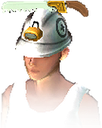
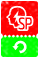
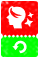

Home › Social & Economy
Market and Shop Live
Trade with other players at the Market for T-Stones (5% sales tax) · the Shop prices things in Durango Coins and Warp Gems — top up Coins with a code from an admin or exchange T-Stones at 100 to 1.
Some sections on this page are not ready yet
There are 3 currencies, as in the original game — T-Stones for trading with other players at the Market · Durango Coins and Warp Gems for buying things in the Shop. You top up Coins with a code from an admin, or exchange them from T-Stones.
What you can do
- List items from your bag at the Market at any price you like
- Search/filter listings and buy what others are selling
- Star listings you like to keep them in Favorites
- Collect money from sales (minus a 5% tax) · take back items that didn't sell
- Top up Durango Coins with a code, or exchange them from T-Stones, then exchange Coins into Warp Gems
- Buy from the Shop: the Skill Reset Ticket · animal/outfit/building packages · medicine · appearance change cards · random cargo boxes and more
Currency Live
The three currencies are kept as separate balances:
| Currency | Where it comes from | Used for |
|---|---|---|
| T-Stones | Discovering new places on the map and full-exploration rewards · Quests · daily attendance · mini-games · Warp · gift mail (Mail) · selling at the Market | Market · cargo fees · creating a clan / Clan Funds · the Skill Reset Ticket · exchanging into Durango Coins · you can hold up to 99,999,999 |
| Durango Coins | Real-money top-up (with a code) · exchange from T-Stones at 100 to 1 — see Top up Durango Coins | Items the Shop prices in Coins · exchanging into Warp Gems · tied to your account, every character can use it · up to 99,999,999 |
| Warp Gems | Exchange from Coins (1 Coin = 3 Gems) · the first daily mission · faction friendship level-ups — see Warp Gems | Items the Shop prices in Gems · spending outside the Shop (skip build time, speed up crops, instant revive, etc.) · belong to the character that got them · up to 99,999,999 |
| Loyalty | A bonus from the random "Express Cargo" boxes in the Shop (5–15 points per box) | Spent in the Loyalty Shop |
| Tickets | Some things are tickets (e.g. map-opening tickets) | Kept separately in your wallet |
The price shown in the Shop is what you actually pay, in the currency on the price tag — things priced in Coins must be paid in Coins, things priced in Gems must be paid in Gems. T-Stones can't buy those directly — exchange them into Coins (and Gems) first · 1 Coin costs 100 T-Stones and exchanges into 3 Gems. Shop prices are the original table price divided by ten, rounded up (e.g. the 90-Gem pack = 30 Coins).
Top up Durango Coins Live
Durango Coins come two ways — a real-money top-up through an admin, or an exchange from T-Stones.
Real-money top-up
- Pay — Thai players use PromptPay · players abroad use Buy Me a Coffee
- Open a top-up ticket in the server's Discord room and attach the receipt → an admin sends you a top-up code (in the form
DC-XXXX-XXXX) - In game: Settings ▸ Account ▸ Enter Coupon → type the code → the Coins are added right away
| Item | Value |
|---|---|
| Rate | 1 baht = 1 Coin |
| Bonus by amount | Top-ups of 100 / 300 / 500 / 900 baht or more get 5% / 10% / 15% / 20% extra (rounded down) — e.g. 100 baht = 105 · 300 = 330 · 500 = 575 · 900 = 1,080 Coins |
| First top-up bonus | Once per tier per account: 10 baht +10 · 50 baht +50 · 100 baht +105 · 300 baht +330 Coins (up to 495 in total) |
| Code | One use only · does not expire · you can enter at most 5 coupons per minute |
- Your first top-up (any amount) also gives you the Supporter role in Discord — see Supporter role
- Type
/topupin chat to see how to top up and your current Coin/Gem balance - Coins you top up belong to your account — every character on the account shares the same balance
Exchange from T-Stones
Open the Shop ▸ the Recharge tab ▸ pick a Durango Coin pack ▸ Purchase → the server takes the T-Stones (100 T-Stones per Coin) → the Coins wait in the Shop's Storage → press Open and they are added to your balance.
| Pay | Get |
|---|---|
| 1,000 T Stone | 10 Durango Coins |
| 3,000 T Stone | 30 Durango Coins |
| 5,000 T Stone | 50 Durango Coins |
| 10,500 T Stone | 105 Durango Coins |
| 33,000 T Stone | 330 Durango Coins |
| 57,500 T Stone | 575 Durango Coins |
| 108,000 T Stone | 1,080 Durango Coins |
| 30 Durango Coins | 90 Warp Gems |
| 50 Durango Coins | 150 Warp Gems |
| 100 Durango Coins | 300 Warp Gems |
| 300 Durango Coins | 900 Warp Gems |
| 500 Durango Coins | 1,500 Warp Gems |
| 1,000 Durango Coins | 3,000 Warp Gems |
- Exchanging with T-Stones has no first top-up bonus and does not count as a real-money top-up (no Supporter role)
- If the exchange fails, the server gives your T-Stones back
- The + button next to the Coin/Gem icons in the Shop takes you to this tab
Warp Gems Live
Warp Gems (Gems) belong to each character.
Where they come from:
- Exchange from Coins in the Shop — the table above (1 Coin = 3 Gems) · exchanged Gems wait in the Shop's Storage first; press Receive
- The first daily mission gives 5 Gems (no T-Stones on top)
- Faction friendship level-ups give Gems per level (5–30 each · the main factions give 180 in total per faction) — see Organizations
What they pay for outside the Shop (real Gems, at the amount the game shows):
| What | Gems taken |
|---|---|
| Skipping build/processing time · speeding up crop growth · express cargo through a warphole | the number on the button |
| Instant repair of a structure | equal to the repair power missing |
| Swapping crop-book mastery | 30 |
| Un-learning a skill (the 6th–15th of the day · a ticket is used first if you have one) | 30 each |
| Instant revive after death (a ticket is used first if you have one) | 100 |
| Clearing a reform slot | 50 |
| Re-rolling a pet's innate skill (without a ticket) | 100 + 100 for every earlier re-roll (up to 1,000) |
Still paid in T-Stones: skipping skill-category research time (Skills) · the "Recommend now" (500) and "Re-roll" (300) buttons of faction missions (Organizations)
Market: selling Live
- Open the Market menu → Sell tab
- Pick items from your bag (equipped, locked, or below 90% durability can't be listed — repair first)
- Set the price per item and how long to sell → confirm — the items leave your bag right away
- While on sale you can press Cancel Listing at any time; the item returns to your bag
- Set any price you like — there is no price cap · Market prices are in T-Stones only
- You can pick several items at once; each is listed separately at the same price
- You sell the actual item — the buyer gets its durability, color and tags as they are
- Food on the Market does not spoil while listed (see Preserving)
Market: searching and buying Live
- Search by name, category, tag, price range and level range; sort by price, time, level or durability
- Many screens have a shortcut to search the Market, e.g. material slots when building/repairing
- Press Buy → pay T-Stones, the item goes straight into your bag · you can't buy your own listings
- Star listings to keep them in Favorites — the server remembers them after you log out
Searching by species name Not ready
You can search the Market by an animal's species name — type the animal's name (Thai, English, Korean or Indonesian) and you find the items that come from that animal, e.g. typing "Tyranno" finds "Tyrannosaurus Hide".
Market: collecting money and unsold items Live
- When something sells you get a notice if you're online → go to the Sold tab and press Receive per item or for all — the money is not added until you collect it · you get the money minus the sales tax
- If the listing time runs out with no buyer → the item moves to the Expired tab; press Collect to take it back
- If you don't take it back in time, the server mails the item back to you (it is not lost)
Sales tax Live
Listing is free — a 5% tax on the sale price is taken only once the item sells, when you collect the money (rounded up to a whole number).
- The rate at the moment the item sold applies — if the rate changes later, items already sold keep their rate
- Cancelled or expired listings pay no tax
- When you collect, a system chat message shows the breakdown, e.g. "sold X for 1,000 − tax 5% 50 = 950 T Stone" (the message is in Thai and the item name may appear in Korean)
- The sold-items list shows the tax in the Sale Fee field
Market numbers
| Item | Value |
|---|---|
| Listing fee | free |
| Sales tax | 5% of the sale price (rounded up), taken when you collect |
| Longest listing time | 7 days |
| Listings at once | 20 items per player |
| Search results per page | 30 |
| Time to take back expired items yourself | 7 days (after that they are mailed back) |
| Favorites limit | 100 (the oldest drops off) |
Shop Live

The Shop sells 110 items (including 6 Warp Gem packs) — everything the server can hand out except EXP-boost packs and level-reward packs · you pay with Durango Coins or Warp Gems according to the price tag, and the Loyalty Shop uses Loyalty points. The Skill Reset Ticket costs 200 T-Stones (Skills)
- Pick an item → Purchase → the Coins/Gems on the price tag are taken
- Some items go straight into your bag; the rest wait in the Shop's Storage tab → press Receive per item or Receive All
- If you don't have enough Coins or Gems the game tells you how many you need — exchange in the Recharge tab
- Some items have a purchase limit (e.g. the Roaming Expansion Ticket, 13 times) or a character-level requirement (Torn Plan from Lv56 · Warp Rush tickets from Lv60)
| Item | Value |
|---|---|
| Unclaimed items in Storage | expire after 30 days |
| Items waiting in Storage | up to 100 |
| Durango Coin pieces exchanged from T-Stones (waiting to be opened in Storage) | do not expire |
Shop tabs
| Tab | Items | Price | Examples |
|---|---|---|---|
| Recommended Products | 11 | 10–500 Warp Gems · 50–450 Durango Coins | Resource Induction Stone · Rainbow-Scaled Iguana · Caldera Crasher Hadro · +8 more |
| Recharge › Durango Coin | 7 | 1,000–108,000 T Stone | 10 Durango Coins · 30 Durango Coins · 50 Durango Coins · +4 more |
| Recharge › Warp Gems | 6 | 30–1,000 Durango Coins | 90 Warp Gems · 150 Warp Gems · 300 Warp Gems · +3 more |
| Package › Constructions | 23 | 1,700 Warp Gems · 15–450 Durango Coins | Mannequin Package · Private Sea Sauna Package · Ashen Cabin Package · +20 more |
| Package › Fashion | 10 | 100–200 Durango Coins | Clubbing Outfit Package · Techwear Package · Brachio Decorative Gear Package · +7 more |
| Package › Expand | 1 | 30 Durango Coins | Roaming Expansion Ticket |
| Animals | 12 | 500 Warp Gems · 100–150 Durango Coins | Rainbow-Scaled Iguana · Caldera Crasher Hadro · Festival Elephantulus · +9 more |
| Item › Character | 11 | 200 T Stone · 10–150 Warp Gems · 20–220 Durango Coins | Torn Plan x1 · Torn Plan x10 · Map Reveal Voucher · +8 more |
| Item › Animals | 17 | 50–300 Warp Gems · 10–30 Durango Coins | Animal Bond-Breaker Ticket · Animal Anti-Aging Remedy (30 days) · Animal Anti-Aging Remedy (60 days) · +14 more |
| Item › Clan | 4 | 50–1,800 Warp Gems | Incense (5) · Incense (10) · Incense (100) · +1 more |
| Item › Other | 1 | 10 Warp Gems | Resource Induction Stone |
| Express Cargo › Events | 1 | 50 Durango Coins | Special Express Cargo |
| Express Cargo › Decorative Gear | 1 | 100 Warp Gems | Decorative Gear Express Cargo |
| Express Cargo › Fashion | 1 | 100 Warp Gems | Fashion Express Cargo |
| Express Cargo › Furniture | 1 | 100 Warp Gems | Furniture Express Cargo |
| Express Cargo › Dye | 1 | 50 Warp Gems | Dye Express Cargo |
| Loyalty Shop | 9 | 200–1,200 Loyalty | Mannequin 09 · Mannequin 10 · Mannequin 11 · +6 more |
The Recharge tab is where you exchange Coins and Gems (see Top up Durango Coins) · the House tab (ready-made wall houses) is not on sale
Main items
| Item | Contents | Price | Limit |
|---|---|---|---|
| Skill Reset Ticket | Skill Reset Ticket | 200 T Stone | — |
| Appearance Change Card | Appearance Change Card | 110 Durango Coins | — |
| Gender+Appearance Change Card | Gender+Appearance Change Card | 220 Durango Coins | — |
| Fatigue Restorative | Fatigue Restorative (Lv60) | 60 Warp Gems | — |
| Potent Fatigue Restorative | Potent Fatigue Restorative (Lv60) | 150 Warp Gems | — |
| Potent Health Recovery Medicine | Potent Health Recovery Medicine (Lv60) | 30 Warp Gems | — |
| Animal Anti-Aging Remedy (30 days) | Animal Anti-Aging Remedy (30 days) (Lv60) | 150 Warp Gems | — |
| Animal Anti-Aging Remedy (60 days) | Animal Anti-Aging Remedy (60 days) (Lv60) | 300 Warp Gems | — |
| Animal Bond-Breaker Ticket | Animal Bond-Breaker Ticket | 30 Durango Coins | — |
| Roaming Expansion Ticket | +1 grazing slot | 30 Durango Coins | 13 per character |
| Map Reveal Voucher | Map Reveal Voucher | 20 Durango Coins | — |
| Resource Induction Stone | Resource Induction Stone ×10 | 10 Warp Gems | — |
| Torn Plan x1 | Torn Plan (Lv60) | 20 Warp Gems | Lv 56+ |
| African Elephant | African Elephant · Animal Anti-Aging Remedy (60 days) ×3 (Lv60) | 150 Durango Coins | — |
- Resource Induction Stone ×10 sells for 10 Gems in the Recommended tab — used on closed craters (Warps & Rifts)
What is not on sale
- EXP-boost packs and level-reward packs (so the "Growth" tab is empty) · packs that hand out T-Stones/Gems/Coins directly
- Animal medicine (reviving a pet needs no medicine) · ready-made wall houses (ones you already bought can still be claimed)
- Time-limited items (daily/weekly limits) and items that grant emotes/buffs
- Real-money Coin packs inside the game — top up only with a code or by exchanging T-Stones
Halloween items (on sale only during the event) Not ready
Six Halloween items are sold only during the event and can't be bought outside it.
| Event | On sale | Item | Contents | Price |
|---|---|---|---|---|
| Halloween | Oct 20 – Nov 10 | Halloween Pumpkin Witch Package | Halloween Pumpkin Witch Costume (Lv60) · Halloween Pumpkin Witch Hat (Lv60) · Witch's Broom (Lv60) | 300 Durango Coins |
| Halloween | Oct 20 – Nov 10 | Halloween Furniture Package | Halloween Hospital Bed (Lv60) · Halloween Curtain (Lv60) | 200 Durango Coins |
| Halloween | Oct 20 – Nov 10 | Pumpkin Witch Phenacodus Package | Pumpkin Witch Phenacodus (Lv40) · Animal Anti-Aging Remedy (60 days) ×3 (Lv60) | 400 Durango Coins |
| Halloween | Oct 20 – Nov 10 | Halloween Skull Costume | Halloween Skull Costume (Lv60) | 1,000 Loyalty |
| Halloween | Oct 20 – Nov 10 | Halloween Skull Hat | Halloween Skull Hat (Lv60) | 1,000 Loyalty |
| Halloween | Oct 20 – Nov 10 | Comfy Halloween Bed | Comfy Halloween Bed (Lv60) | 1,000 Loyalty |
Using items bought in the Shop Live
| Item | How to use it |
|---|---|
 Skill Reset Ticket | Use it from your bag → confirm (Skills) |
| Capsule buildings (pool, cabin, stage… from packages) | Press Place from your bag → you get the building at the item's level (capped by the building's max) with full durability · place it on your own land, on both the shared and the private Tamed Island |
| Pet reins from animal packages | The animal is already tamed — press Form a Bond right away, no cage needed (Pets) |
 Appearance Change Card · Gender+Appearance Change Card | Pick your new look and confirm; one card is used · changing gender unequips everything into your bag and the game reconnects you |
| Pet task feed | Feed it to a pet in a cage — it shortens the pet's work time by the feed's amount |
| Medicine, food, clothes, tools, map-opening tickets | Use/wear them as normal |
Not finished yet Not ready
- NPC shops / kiosks — no NPC sells or buys items yet
- Time-limited Shop items (daily/weekly limits) and items that give emotes/buffs — not sold yet
- Transferring Durango Coins to other players / purchase tickets — not available on this server